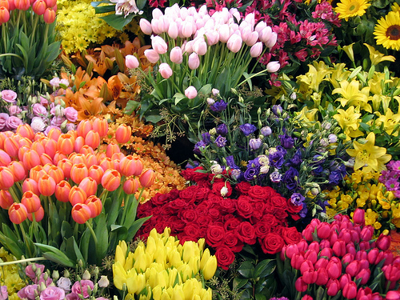

Starting a flower garden can be somewhat of a challenge, but there are several good flower gardening tips and tricks you can follow to make the process easier. Follow our beginner gardening tips and watch your beautiful garden bloom.
Choose a Sunny Location
First, be sure the area you choose for your flower garden will get the proper amount of sunlight. Most flowers need plenty of natural light, so watch the area you’re thinking about for a few days to determine whether or not it receives enough sun throughout the day. If it does, it will be a prime spot for growing flowers. If not, you may want to consider relocating the garden to another location where the sun shines more fully. If sunlight is limited in your space, you will need to look for flowers that require partial to little sun.
Make Your Flower Garden Accessible
Along with sunlight, think about how accessible the garden location will be. Make sure you choose a spot that allows for easy maneuvering so that you will be able to trim, fertilize and treat your flower garden without stepping on the fragile plants. If getting around your garden looks like it’s going to be difficult, consider creating a pathway that will allow you to move through your garden easily. Pathways also look very nice and give visitors some room to walk and look at your flower garden more closely.
Mix Your Soil for Good Drainage
Before you start planting flowers, plan your drainage system. Drainage is crucial to successful flower gardening. Without proper drainage, flowers and other plants can become waterlogged or get what is called root rot. Root rot will kill a plant fairly quickly and can spread to other plants. Avoiding the buildup of too much water is essential to a successful garden. Try to plant your flower garden in a place that provides the best drainage possible in order to avoid this happening to your garden. Plant flowers that require a lot of water in areas that hold the most moisture. They’ll stay well hydrated and will help prevent root rot. If drainage is proving to be a big problem, you can also try a raised flower garden. One flower gardening tip for drainage problems is mixing your soil with ingredients that prevent clumping and promote drainage. When soil gets too wet, it can clump together and cause problems. Mixing your soil with mulch, compost, sand and volcanic rock like perlite or vermiculite can help your soil stay loose and fluffy, which will promote good drainage.

Design Your Flower Garden Before You Plant
Next, think about the colors of each flower, and plant them accordingly. For example, you could group your pink and yellow flowers together, or swap them out one by one to create a really beautiful color effect. You could also group various plants together to make a nice textured effect. Thoughtfully plan your flower garden ahead of time so when it finally blooms, you’ll love the final result. We recommend outlining your garden with bulb plants such as tulips, and then accent it with perennials and smaller blooming flowers. The combination of two types of flowers creates a lovely contrast and gives the garden depth and beauty. One useful gardening tip for beginners is to make a garden planner to help remind you when to plant, prune and pick your flowers.
Give Flowers Plenty of Room To Grow
Give your plants enough space to grow in your flower garden. This is one flower gardening tip that often gets overlooked because people want an explosion of beautiful flowers. However, planting flowers too close together can create poor air circulation that leads to fungal disease. Before planting flowers, research the ideal spacing for each type and mark the spacing in the soil for accuracy. Ideally, you’ll plant flowers far enough apart so that when they fully mature, they have plenty of room to flourish.
Choose Flowers With Different Bloom Seasons
For a garden that blooms all year long, choose a variety of flowers with different blooming seasons. Depending on where you live, it may be too cold to expect flowers during the fall and winter months, but you can still plan a flower garden that blooms from early spring to the end of summer.
Choose Easy Flowers To Grow
One tip we always give to beginners is to choose your flowers wisely. Gardening requires a lot of work and patience, and it can be frustrating at times. Some flowers require a lot of care that can be too much for the new gardener. Instead, start with flowers known for their resilience. Below is a list of our favorite hardy flowers perfect for someone new to planting flowers — click to shop!
Easy Flowers to Grow:
- Sunflowers
- Marigolds
- Cosmos
- Zinnias
- Morning Glories
- Sweet Peas
- Nasturtium
- Coneflower
Add Ornamental Grass
Once you’re comfortable with the flowers you have growing in your garden, you might want to consider adding in some ornamental grasses. Most people think that grass will overtake the garden and end up choking your flowers like a weed might. This is actually untrue, and grass can really add another dimension to the garden without hurting your flowers. In fact, some ornamental grasses will flower in the summer! You may want to consult with someone who specializes in grasses and planting grass seeds at your local nursery to find out which kind will work best with your garden in your specific region
Be Patient and Do Your Research
Perhaps the most important tip of all when cultivating and caring for a flower garden is to remain patient and do your research. Flowers are very delicate and take a little bit of extra time to finally bloom to their full potential. Read as much as you can about each type of flower that you have and tweak the water, sunlight and fertilizer needs until you find the right combination that will achieve maximum growth. With a little bit of practice, you can have a beautiful flower garden that will blossom and bloom for many seasons to come.